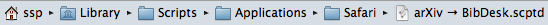
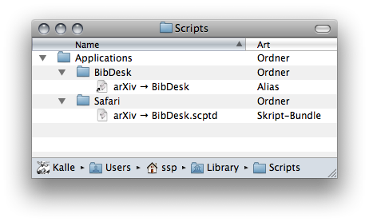
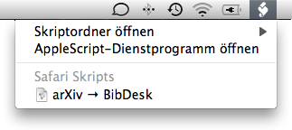

from the preprint arXiv to your BibDesk database in a single step
Download the AppleScript.
written by: Christoph Wockel and Sven-S. Porst.
Feedback: Send an e-mail.
Download the script and put it in a location where you can easily run it.
Read recommended setup guide »
Activate the Script Menu: In Mac OS X.6 and above this is done in the General pane of the Preferences in the ‘AppleScript Editor’ application.
Place the downloaded script in the subfolder ‘Safari’ of the folder ‘Applications’ of the folder ‘Scripts’ of the folder ‘Library’ inside your home folder.

You may need to create some of these folders yourself. Starting with Mac OS X.7, the ‘Library’ folder is hidden by default; You can get into it anyway by using the ‘Go To Folder…’ command (⌘⇧G) in the Finder and typing in the name.
Create a ‘BibDesk’ folder next to the ‘Safari’ folder you placed the script in and put an alias to the script in there. [You can create an alias by dragging the file while holding the ⌘ and ⌥ keys].

That’s it. The system’s script menu should be visible at the right hand side of the menu bar now and it should offer the ‘arXiv → BibDesk’ command in both Safari and BibDesk:

Alternatively you can place the downloaded script in the subfolder ‘Scripts’ of the folder ‘BibDesk’ of the folder ‘Application Support’ of the folder ‘Library’ of your home folder. It will then become available in BibDesk’s own script menu only.
If everything goes well you will end up with:
Currently the script contains commands which should work with Google Chrome as well. To use them, you will need to open the script in AppleScript Editor, comment out the block relating to Safari at the beginning and uncomment the lines relating to Google Chrome. You will probably want to adapt the setup instructions to be more Chrome-centric in that case as well.
go to both the preprint arXiv and the BibDesk team for their great service and software respectively. Additional credit goes to Christiaan Hofman who wrote the download function the script uses. In case this script improves your life significantly, please consider donating to either of those projects.
See changes since v10 at github. More information about older versions »